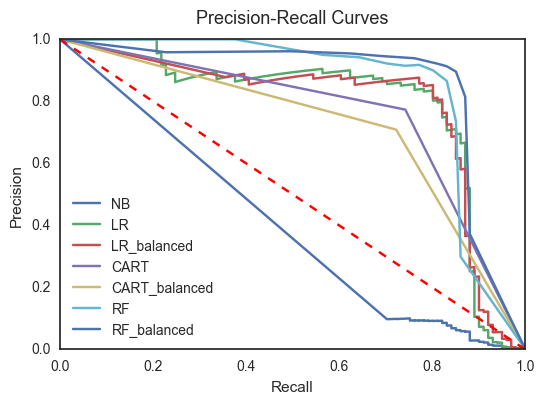
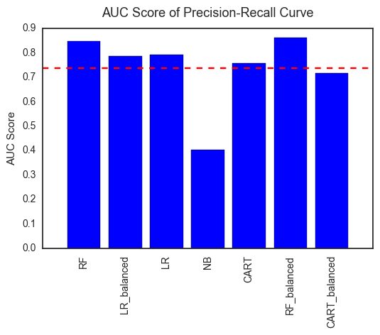
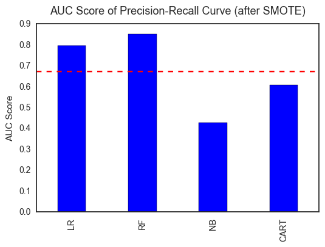

Fraud Detection: Learning from Imbalanced Data
June 20, 2017
Note: The code and full report for this project is available in my Github Repository.
1. Introduction
Combating fraud is an important application of Machine Learning. Fraud exists in many industries including banking and financial sectors, insurance, government agencies, and more. With the advances in computer technology and e-commerce, fraud attempts have seen a drastic increase in recent years, making fraud detection more important than ever. Machine learning for fraud detection works on the basis of large, historical datasets that have been aggregated across many clients. The data serve as the training set and allow businesses to build efficient machine-learning-based fraud detection systems with optimized performance. Compared to standard predictive modeling problem, fraud detection is characterized with skewed class distribution, or class imbalance, since fraud is a relatively rare event. Therefore, one challenge of fraud detection with Machine Learning is to mitigate the class imbalance problem.
The goal of this project is to build supervised classification models for fraud detection using preprocessed and anonymized credit card transaction data. The main focus will be on dealing with class imbalance.
2. Analysis
2.1 Data
The dataset (available in Kaggle contains transactions made by credit cards in September 2013 by European cardholders. It contains only numerical input variables, including 28 features which are the result of a PCA transformation, and 1 feature which has not been transformed with PCA, namely 'Amount'. There are no missing values in the dataset. The original features and more background information about the data are not available due to confidentiality issues. The target variable for the dataset is 'Class'. It takes value 1 in case of fraud and 0 otherwise. This dataset presents transactions that occurred in two days, where there are 492 frauds out of 284,807 transactions. Clearly, the dataset is highly skewed, the positive class (frauds) only account for 0.172% of all transactions.
2.2 Methodology
Class imbalance exists in many real-world classification problems and handling imbalanced dataset has been an actively studied subject in Machine Learning. Before digging into the current problem, some common approaches for dealing with imbalanced data is reviewed below. These approaches include:
1. Collect more data.
Having more data might lead to a more balanced dataset. A larger dataset is also helpful for minority class resampling. However, this approach is not always possible in real life.
2. Balance the training set.
This can be done by resampling the training set or generating synthetic samples.
- Oversample the minority class. Oversampling randomly replicates minority instances to increase their population.
- Undersample the majority class. Undersampling randomly downsamples the majority class.
- Synthesize new minority classes. The best-known example of this approach is SMOTE (Synthetic Minority Oversampling TEchnique). It creates synthetic samples from the minority class instead of making duplicates. The algorithm selects two or more similar instances, i.e., nearest neighbors (using a distance measure), and perturbs an instance one attribute at a time by a random amount within the difference to the neighboring instances to construct new minority instances.
Resampling is the easiest to implement. However, both under/over-sampling have their drawbacks. Undersampling discards potentially important data and makes the independent variables look more variable than they actually are; whereas data duplication with oversampling makes the variable appear to have low variance and could lead to overfitting. SMOTE, compared to traditional oversampling, creates similar examples instead of exact copies of the minority class, which results in more general models and avoids overfitting.
3. Change the performance metrics.
The performance of classification algorithms is typically evaluated by a confusion matrix which compares the predicted class and the actual class. In the confusion matrix, the number of negative examples correctly classified is True Negatives (TN), the number of negative examples incorrectly classified as positive is False Positives (FP), the number of positive examples incorrectly classified as negative is False Negatives (FN) and the number of positive examples correctly classified is True Positives (TP). In the context of balanced datasets and equal error costs, the common performance metric is predictive accuracy, which is defined as the percentage of correctly identified examples, i.e., (TP+TN)/(TP+FP+TN+FN). In the case of imbalanced datasets, it is more appropriate to use other metrics.
- Precision-recall curve. Precision is defined as TP/(TP+FP) and is a measure of the classifier’s exactness. Recall, on the other hand, is defined as TP/(TP+FN). It measures the classifier’s sensitivity. There is a tradeoff between precision and recall. For a given model, the classifier performance can be visualized using a precision-recall curve, which captures the tradeoff between precision and recall as the decision threshold is varied. On its own, a model is overall better if the curve is closer to the top right of the chart where precision and recall are both 1.0. One way to capture the overall quality of the model is by computing the area under the curve (AUC). The AUC will be 1.0 for an ideal model.
Note that Receiver Operator Characteristic (ROC) curve is also commonly used to measure the performance of binary classifiers. However, when dealing with highly skewed datasets, it provides a less informative picture of the algorithm’s performance than the precision-recall curve.[1]
4. Algorithm level approach.
- Adjust the class weight. This approach is based on reducing the misclassification costs for minority class. Many Machine Learning toolkits have ways to adjust the importance of the classes. For examples, many classifiers in
Scikit-learnhave an optional'class_weight'parameter that can be set to ‘balanced’. - Adjust the decision threshold. Instead of getting classification labels from the classifier, a good approach to handling class imbalance is to estimate probability and then adjust the decision threshold to separate classes. Probabilistic classification models in
Scikit-learnsuch as logistic regression offer'predict_proba'method to estimate probability.
3. Results and Discussions
3.1 Model Selection and Effect of Adjusting Class Weight
As mentioned above, for classification problem with skewed data, it is better to estimate probability than labels. So several naturally probabilistic classification algorithms are selected here, including Naive Bayes, Logistic Regression, Decision Tree Classifier, and Random Forest. Also, except for Naive Bayes, all other models have the 'class_weight' parameter that can be set to ‘balanced’. So before any resampling of the data, the performance of these models (with or without setting 'class_weight' to be ‘balanced’) is compared.
The dataset is first randomly split into 80% training set and 20% test set. The features are normalized before training the models. The precision-recall curves of different models (Figure 2) and their AUC scores (Figure 3) are shown below. Since a model is considered better if the curve is closer to the top right of the chart, in this particular case, Random Forest model with 'class_weight' set to be ‘balanced’ seems to be the best. The comparison of areas under the precision-recall curves also shows that Random Forest model (balanced) gives the largest area followed by Random Forest model (not balanced), and logistic model (not balanced). Interestingly, although adjusting class weight shows a positive effect on Random Forest model, it does not result in significant change of the model performance for Logistic Regression, and it even exerts a negative effect (worse precision-recall performance) for Decision Tree Classifier.


3.2 Effect of SMOTE
An alternative to adjusting class weight at the algorithm level is to balance the training set, for example, with SMOTE. As introduced above, SMOTE is an oversampling technique, but instead of creating exact copies of the existing minority data, SMOTE generates new, synthetic minority points by interpolating between current minority examples.
A Python package named 'imbalanced-learn' is used to implement SMOTE. The package offers a number of re-sampling techniques commonly used in datasets showing strong between-class imbalance. SMOTE operation generates additional positive examples so that the class ratio of the training set becomes 1:1. The above four classification algorithms, Naive Bayes, Logistic Regression, Decision Tree, and Random Forest (all out-of-box and without setting 'class_weight' to ‘balanced’) are trained using the new balanced training set. The models are then compared with their precision-recall curves (Figure 4) and AUC scores (Figure 5). The best model is again out-of-box Random Forest model. The AUC score of the Random Forest model after SMOTE (0.852) is better than the one without SMOTE (0.849), but is not as good as Random Forest model with adjusting class weight (0.861). In other words, both approaches improve the performance of the model but in this particular case, adjusting the class weight is slightly better than SMOTE. Note that SMOTE is limited in the fact that it can only generate examples WITHIN the body of available examples, i.e., it can only fill in the convex hull of existing minority examples but not outside.


4. Conclusion
This project explores approaches for handling class imbalance by building supervised fraud detection models using credit card transaction data. The original dataset is highly skewed with the positive class only accounting for 0.172%. Therefore, instead of using common metrics like accuracy, the precision-recall curve and the area under the curve (AUC) are used as the performance measure for the models. Algorithm level approach (i.e., adjusting class weight) and data rebalancing technique (SMOTE) are used to optimize the model performance. It is found that:
- Both adjusting class weight and SMOTE result in better model performance as measured by the precision-recall curve.
- Random Forest model turns out to be the best performing model compared to Naive Bayes, Logistic Regression, and Decision Tree Classifier.
- Adjusting class weight of Random Forest model gives slightly better result than training the model on SMOTE-balanced dataset.
[1] J. Davis et al. The relationship between Precision-Recall and ROC curves. Proceedings of the 23rd international conference on Machine learning, 2006.